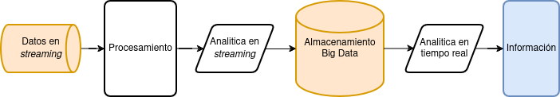

Ingesta y almacenamiento de datos#
Procesos en Big Data#
Existen varias metodologías y modelos disponibles en el mercado para la recopilación, almacenamiento, consulta, visualización de datos, y su posterior acción.
Provienen del mundo de la minería de datos, y entre ellas se pueden mencionar KDD (Knowledge Discovery in Databases), SEMMA y CRISP-DM.
CRISP-DM (Cross Industry Standard Process for Data Mining) por ejemplo, es un modelo de procesos estandarizado e iterativo centrado en el negocio.
Fue desarrollado para ser distribuido libremente y promueve las mejores prácticas en minería de datos. Más información en la sección Procesos en la ciencia de datos.
Para el NIST Big Data interoperability Framework (NBDIF) - Version 3.0 Final [CG19] (Pág.29), el ciclo de vida del análisis de los datos se compone de cinco fases:
Captura de los datos en su formato original. Ingestión de datos (Data Ingestion).
Preparación y modelado. Almacenamiento de datos (Data Storage).
Análisis y consulta de datos (Data Processing / Data Query).
Visualización de los datos. (Data Visualization).
Acción con el uso de los mismos.
Se verán a continuación las fases una a una más en detalle.
Ingestión de datos#
Obtención, procesado (separación, agrupación, filtrado) y limpieza de datos (eliminar duplicados y errores).
Es el primer paso donde se obtienen los datos que provienen de varias fuentes y que irán a dispositivos de almacenamiento para su posterior acceso, uso y análisis por parte de la organización.
En esta etapa los datos son priorizados y categorizados.
Su destinación es generalmente:
Un Almacén de datos (data warehouse): Snowflake, Amazon Redshift, Google BigQuery, Azure Synapse, o
Un Lago de datos: (data lake): Databricks con datos estructurados, semi estructurados y no estructurados.
Cuestiones a considerar#
Velocidad de la entrada de datos (frecuencia: Batch, Real-Time).
Volumen de los datos.
Variedad (formato: datos estructurados, Semi-estructurados, no estructurados).
Otras cuestiones a tener en cuenta son la veracidad de esos datos (si son confiables), su variabilidad, y el valor de los mismos.
La velocidad de datos se ocupa de la velocidad a la que fluyen los datos desde diferentes fuentes, como máquinas, redes, IoT, interacción humana, sitios de medios, y redes sociales, entre otras.
El movimiento de datos puede ser masivo o continuo en la ingestión de datos.
El volumen de los datos gestionados puede ser enorme.
Los datos son generados desde diversas fuentes.
Éstas pueden aumentar cada día tanto en cantidad como en volumen de datos.
En cuanto a la frecuencia los datos se pueden procesar en tiempo real o por lotes.
En tiempo real el procesamiento ocurre cuando los datos se reciben al mismo tiempo que se generan.
Los datos por lotes se almacenan mediante un proceso por lotes fijo en algún intervalo de tiempo y luego se trasladan al flujo del proceso de administración de datos.
La ingestión de datos se puede realizar utilizando formatos de distinto tipo:
Datos estructurados (formato tabular).
Semi-estructurados (ficheros JSON, CSV, etc.).
No estructurados (imágenes, audio, video, etc.).
Fuente: [Dum12]
Buenas prácticas en ingestión de datos#
Ancho de banda de la red:
El flujo de datos (Data Pipeline) debe poder competir con el tráfico comercial.
A veces el tráfico aumenta o disminuye, por lo que la escalabilidad del ancho de banda de la red es el mayor desafío del Data Pipeline.
Se requieren herramientas de ingestión de datos que permitan la limitación y compresión del ancho de banda en base a las necesidades del momento.
Soporte para red no confiable:
La canalización en la ingestión de datos toma datos con múltiples estructuras, es decir, archivos de texto, datos de archivos tabulares, archivos XML, archivos de registro, etc. y debido a la velocidad variable de los datos que llegan, es posible que viajen a través de una red poco confiable.
La implementación del flujo de datos o Data Pipeline también debería ser capaz de soportar esto.
Transmisión de datos:
Las mejores prácticas de ingestión de datos dependen de la necesidad empresarial, ya sea para procesar los datos por lotes, flujos o en tiempo real.
En ocasiones, es posible que se necesiten todos a la vez para el procesamiento a través de la canalización de ingesta de datos, por lo que las herramientas deben ser capaces de admitirlos.
Tecnologías y Sistemas Heterogéneos:
Las herramientas para la canalización de la ingesta de datos deben poder utilizar diferentes tecnologías de fuentes de datos y diferentes sistemas operativos.
Elección del formato de datos correcto:
Las herramientas de ingesta de datos deben proporcionar un formato de serialización de datos, lo que significa que, dado que los datos vienen en formatos variables, los convierte a un solo formato para proporcionar una forma más fácil de comprenderlos o relacionarlos.
Repositorio único:
El análisis crítico es más efectivo cuando se combinan datos de múltiples fuentes.
Para la toma de decisiones de negocio, se debe tener un repositorio único para todos los datos que llegan.
Integraciones:
La cantidad de datos aumenta continuamente en el proceso de ingesta de datos, llegan datos nuevos y se modifican los datos antiguos, por lo cual a veces cada nueva integración puede tardar entre unos días y unos meses en completarse.
Alta precisión:
La única forma de generar confianza con los datos es asegurarse de que los datos son auditables.
Una buena práctica que es fácil de implementar es nunca descartar entradas o formularios intermedios al modificar datos en el flujo del proceso de ingesta de datos.
Latencia:
Cuanto más actualizados sean los datos, más ágil puede ser la toma de decisiones en la organización, pero hay un coste a considerar.
La extracción de datos de APIs y bases de datos en tiempo real puede ser difícil, y muchas fuentes de datos de destino, incluidos grandes almacenes de objetos como Amazon S3 y bases de datos de análisis como Amazon Redshift, están optimizadas para recibir datos en fragmentos en lugar de una secuencia.
Mantener la escalabilidad:
La ingesta de datos se puede aumentar o disminuir durante algunos períodos de tiempo.
El uso y tratamiento de los datos no es uniforme.
Se debe hacer que la canalización sea tan escalable que pueda manejar cualquier volumen de datos que lleguen a una velocidad variable.
Problemas en la ingesta de datos#
Cuando existen numerosas fuentes de Big Data con diferentes formatos, el mayor desafío para el negocio es ingerir datos a una velocidad razonable y procesarlos de manera eficiente.
De esta manera los datos pueden priorizarse y en consecuencia mejorar la toma de decisiones de negocio.
Las fuentes de datos, las herramientas de ingestión de datos y las aplicaciones de consumo evolucionan permanentemente durante el proceso de ingestión de datos.
Los datos pueden modificar sus atributos sin previo aviso independientemente de la aplicación utilizada.
Detección y captura de datos modificados: esta tarea es difícil, no solo por la naturaleza semiestructurada o no estructurada de los datos.
También lo es por tratar con baja latencia (una red informática que está optimizada para procesar un volumen muy alto de mensajes de datos con un retraso mínimo).
Estas redes están diseñadas para admitir operaciones que requieren acceso casi en tiempo real a datos que cambian rápidamente.
Procesamiento de datos en tiempo real#

Imagen: Ingesta de datos en tiempo real en Big Data. Autor: M.H.Fortino(2024).
Apache Spark#
Apache Spark es un motor de procesamiento rápido y general compatible con datos de Hadoop.
Puede ejecutarse en clústeres de Hadoop a través de YARN o de modo independiente.
Procesa datos en HDFS, HBase, Cassandra, Hive y cualquier formato de entrada de Hadoop.
Diseñado para realizar tanto procesamiento por lotes (similar a MapReduce) como nuevas cargas de trabajo como streaming, consultas interactivas y aprendizaje automático.
Extraído de las FAQs: https://spark.apache.org/faq.html.
Más información en la sección Motores de consultas de estos apuntes.
Apache Flume#
Un servicio distribuido, confiable y de alta disponibilidad que colecta, agrupa y mueve eficientemente grandes cantidades de logs y datos.
Extraído de: https://flume.apache.org/.
Es robusto y tolerante a fallas con mecanismos de confiabilidad ajustables.
Cuenta también con mecanismos de conmutación por error y recuperación.
Utiliza un modelo de datos extensible simple que permite la aplicación analítica en línea.
Un evento Flume se define como una unidad de flujo de datos que tiene una carga útil de bytes y un conjunto opcional de atributos de cadena.
Un agente de Flume es un proceso (JVM) que aloja los componentes a través de los cuales fluyen los eventos desde una fuente externa hasta el siguiente destino (salto).
Una fuente de Flume consume eventos que le envía una fuente externa como por ej. un servidor web.
La fuente externa envía eventos a Flume en un formato que es reconocido por la fuente de destino de Flume.
Apache Flink#
Framework utilizado para el procesamiento de flujos distribuidos (distributed stream) que facilita resultados precisos, aún en el caso de datos que están desordenados o que llegan con retraso en la distribución.
Extraído de: https://flink.apache.org/.
Sistemas de mensajería#
Apache Kafka#
Es una plataforma de transmisión de eventos distribuidos de código abierto utilizada por miles de empresas para canalizaciones de datos de alto rendimiento, análisis de streaming, integración de datos y aplicaciones de misión crítica.
Es también un sistema de mensajería escalable que permite a los usuarios publicar y consumir grandes cantidades de mensajes en tiempo real por suscripción.
Extraído de: https://kafka.apache.org/.
La transmisión de eventos es el equivalente digital del sistema nervioso central del cuerpo humano.
Es la base tecnológica para el mundo ‘siempre activo’ donde las empresas están cada vez más definidas por software y automatizadas, y donde el usuario de software es más software (Inteligencia Artificial).
Técnicamente hablando, la transmisión de eventos es la práctica de capturar datos en tiempo real de fuentes de eventos como bases de datos, sensores, dispositivos móviles, servicios en la nube y aplicaciones de software en forma de flujos de eventos; almacenar estos flujos de eventos de forma duradera para su posterior recuperación; manipular, procesar y reaccionar a los flujos de eventos en tiempo real y retrospectivamente; y enrutar los flujos de eventos a diferentes tecnologías de destino según sea necesario.
La version comercial de Apache Kafka es Confluent https://www.confluent.io/es-es/.
Otro broker de mensajería es RabbitMQ https://www.rabbitmq.com/.
Apache ActiveMQ#
Es el sistema de mensajería multi protocolo open source más popular del mercado.
Se conecta a clientes escritos en JavaScript, C, C++, Python, .Net, y más.
Integra aplicaciones multiplataforma utilizando el protocolo AMQP.
Intercambia mensajes mediante STOMP sobre websockets, gestiona dispositivos IoT con MQTT.
Soporta la infraestructura JMS (Java Message Service).
Fuente: https://activemq.apache.org/
Apache Pulsar#
Apache Pulsar es una plataforma de eventos distribuidos cloud similar a Kafka originalmente creada por Yahoo!
La versión comercial de sus creadores es StreamNative https://streamnative.io/.
Pub/Sub#
Es un sistema de mensajería que combina la escalabilidad horizontal de Apache Kafka y Pulsar con funciones del middleware como colas y filtros de mensajes no entregados de Apache ActiveMQ y RabbitMQ.
Se complementa con Dataflow, que controla la anulación de mensajes duplicados, el procesamiento “solo una vez” y generación de marcas de agua a partir de eventos con marcas de tiempo.
Para usar Dataflow se escribe la canalización con el SDK de Apache Beam y luego se ejecuta.
Otras herramientas#
Logstash#
Canalización (pipeline) de procesamiento de datos del lado del servidor de código abierto que ingiere datos de una multitud de fuentes, los transforma simultáneamente y luego los envía al reservatorio (stash), por ejemplo Elasticsearch.
Extraído de: https://www.elastic.co/es/logstash.
Apache Nifi#
Es una de las mejores herramientas de data ingestion del mercado.
Proveee un sistema fácil de usar, poderoso y confiable para procesar y distribuir datos.
Extraído de: https://nifi.apache.org/, https://nifi.apache.org/documentation/v2/.
Documentación: https://nifi.apache.org/docs/nifi-docs/html/getting-started.html.
Caso de uso: Best practices and lessons learnt from Running Apache NiFi at Renault
https://fr.slideshare.net/Hadoop_Summit/best-practices-and-lessons-learnt-from-running-apache-nifi-at-renault.
Apache Beam#
Es un modelo de programación unificado que permite implementar trabajos de procesamiento de datos por lotes y de streaming en cualquier motor de ejecución.
Lee los datos desde diversas fuentes, ejecuta la lógica del negocio para batch y streaming, y finalmente los deposita en las soluciones de almacenamiento disponibles.
Una canalización de Beam puede ejecutarse en los sistemas de procesamiento de datos distribuidos más populares, como Spark, Flink o Samza.
Fuente: https://beam.apache.org/.
Apache Samza#
Permite crear aplicaciones con estado que procesan datos en tiempo real desde múltiples fuentes, incluido Apache Kafka.
Admite opciones de implementación flexibles para ejecutarse en YARN o como una biblioteca independiente.
Tutorial: https://samza.apache.org/startup/hello-samza/1.6.0/.
Fuente: https://samza.apache.org/.
Apache Airflow#
Apache Airflow es una plataforma que permite crear, programar temporalmente, y monitorar flujos de trabajo utilizando Python como lenguaje.
Automatiza la ingestas de datos, acciones de mantenimiento periódicas y realiza tareas de administración.
Extraído de: https://airflow.apache.org/.
Un flujo de trabajo de ejemplo puede ser:
Obtener datos de una base de datos relacional como PostgreSQL para enviarlos a Kafka.
Transformar los datos con Apache Spark y finalmente enviar un mensaje de finalización.
Astro#
Astro es la versión comercial de Apache Airflow. Facilita la construcción, ejecución y observación de los datos de la organización en una única plataforma.
Permite integrar además la inteligencia artificial y los LLM (Large Language Models) para acelerar la innovación.
Fuente: https://www.astronomer.io/.
DBT#
DBT (Data Build Tool) permite a los ingenieros de datos y analistas realizar transformaciones en los datos escribiendo sentencias SQL de tipo SELECT.
Internamente, DBT traduce estas sentencias en tablas y en vistas, de esta forma facilita la creación de transformaciones sobre los datos disponibles en el almacén de datos.
Fuente: https://www.getdbt.com/.
Otras herramientas#
Mage AI es una herramienta open source orientada a crear canalizaciones para transformar e integrar datos.
Fivetran es una cloud-based platform para ETL.
Stitch Data Loader mueve más de 130 tipos de fuentes al data warehouse.
Airbyte es una herramienta open-source de integración de datos.
Materialize es un almacén de datos útil para análisis en tiempo real que ofrece actualizaciones de vista incrementales.
Extraído de: https://materialize.com/.
Modelo semántico de datos (SDM)#
El modelo semántico de datos (SDM) también cambia con el tiempo.
Se necesita un modelo de datos (DM) en el que se incluya información semántica.
Un DM que incluya la capacidad de expresar e intercambiar información permite a las partes interpretar el significado (semántica) de las instancias.
Extraído de: Semantic Data Model: https://es.wikipedia.org/wiki/Modelo_semántico_de_datos.
En un modelo semántico los hechos generalmente se expresan mediante relaciones binarias entre elementos de datos, mientras que las relaciones de orden superior se expresan como colecciones de relaciones binarias.
Típicamente las relaciones binarias tienen la forma de ternas: Objeto-<Tipo de Relación>-Objeto.
Por ejemplo: La Torre Eiffel
<se encuentra en>París.
Según el conocido trabajo seminal de Smith y Smith (1977), tres abstracciones son muy importantes para el modelado de datos:
Clasificación: modelo instancia_de_relaciones.
Agregación: modelo tiene_relaciones.
Generalización: modelo es_unas_relaciones.
Extraído de: Semantic Data Modelling: http://www.jhterbekke.net/SemanticDataModeling.html.
Integridad de datos: las especificaciones del modelo de datos implican la validez de ciertas reglas de integridad.
Relatividad: cada atributo en una definición de tipo está relacionado con uno y solo un tipo con el mismo nombre, mientras que cada tipo puede corresponder con varios atributos en otros tipos.
Convertibilidad: Cada definición de tipo es única: no hay definiciones de tipo que lleven el mismo nombre o la misma colección de atributos.
database warehouse.
base description (A16).
type product kind (A8) = description.
base color (A10).
base stock (I8).
base price (R4,2).
type product (I7) = description, color, stock, price, product kind.
base company name (A20).
base address (A20).
base zip (A6).
base city (A16).
type supplier (A8) = company name, address, zip, city.
type purchased product (A9) = supplier, product, price.
...
base prepaid (R4,2).
type sale (A7) = sold product, quantity, price, customer, date, prepaid.
end.
Artículo Semantic (Big) Data Analysis: An Extensive Literature Review.
Almacenamiento de datos (Data Storage)#
El almacenamiento se convierte en un desafío cuando el tamaño de los datos es muy grande.
Varias posibles soluciones pueden ayudar a resolver este problema.
Encontrar la solución de almacenamiento más eficiente es el objetivo de este paso.
Dependiendo de las funciones y características del dataset los datos se pueden almacenar de la siguiente forma:
Almacén de datos (Data warehouse) para el almacenamiento persistente.
Big Data volume system para los datos originales antes de la preparación.
Big Data velocity application durante la recoleción, preparación y análisis al vuelo.
Persistencia políglota#
Se necesitan diferentes tipos de bases de datos para manejar las diferentes variedades de datos, pero el uso de las mismas crea una sobrecarga en el sistema.
Es por este motivo que hay un nuevo concepto en el mundo de las bases de datos: la persistencia políglota. Es la idea de usar múltiples bases de datos para impulsar una sola aplicación.
La persistencia políglota es la forma de compartir o dividir los datos en múltiples bases de datos y aprovechar su poder juntas.
BBDDs Relacionales.
BBDDs No SQL.
BBDDs de grafos.
BBDDs en memoria.
Polyglot Persistance tiene tiempos de respuesta más rápidos.
Las bases de datos NoSQL escalan bien cuando se modelan correctamente para los datos que se desean almacenar.
La experiencia de usuario es mejor cuando se aprovecha el poder de múltiples bases de datos al mismo tiempo.
Por ejemplo, si desea buscar productos en una aplicación de comercio electrónico, se utiliza ElasticSearch, que devuelve los resultados en función de la relevancia, lo que MongoDB no puede hacer fácilmente.
Como contrapartida, tiene como desventaja la necesidad de contratar personal especializado para la integración de las bases de datos y una mayor cantidad de recursos de almacenamiento.
Herramientas de almacenamiento para Big Data#
HDFS : Hadoop Distributed File System.
Ozone: Un object store para Hadoop, la próxima generación de HDFS.
GlusterFS: Sistema de archivos distribuido confiable.
Ceph: Proporciona almacenamiento de objetos, bloques y sistemas de archivos en un solo clúster.
MinIO: Un object store para la insfraestructura de datos de IA.
Cloud storage: Amazon S3 Storage Service, IBM Cloud Object Storage, Azure Blob Storage, Google Cloud Storage.
HDFS#
HDFS es un sistema de ficheros basado en Java que provee almacenamiento confiable y escalable.
Fue diseñado para abarcar grandes grupos de servidores básicos (commodity servers).
HDFS contiene una gran cantidad de datos y proporciona un acceso a los mismos de manera sencilla y fácil.
Para almacenar una inmensa cantidad de datos, los ficheros son guardados en varias máquinas.
Estos ficheros son guardados de forma redundante para poder rescatar el sistema en caso de pérdida de datos a causa de fallos.
HDFS también proporciona la disponibilidad de aplicaciones para procesamiento en paralelo durante el paso de ingestión de datos.
HDFS fue construido para soportar aplicaciones con grandes conjuntos de datos, incluyendo ficheros con terabytes de tamaño.
Utiliza una arquitectura maestro/esclavo, en la que cada clúster consta de un solo Namenode que administra las operaciones del sistema de archivos y admite Datanodes que administran el almacenamiento de datos en nodos de cómputo individuales.
Cuando HDFS toma datos, divide la información en partes separadas y las distribuye a diferentes nodos en un clúster, lo que permite el procesamiento paralelo.
El sistema de archivos en Ingestión de datos también copia cada pieza de datos varias veces y distribuye las copias a nodos individuales, colocando al menos una copia en un rack de servidor diferente.
Apache Ozone#
Ozone es un object store escalable, redundante, y distribuído para Hadoop.
Además de escalar a billones de objetos de cualquier tamaño, Ozone puede trabajar puede funcionar de manera efectiva en entornos en contenedores como Kubernetes y YARN.
Extraído de: https://ozone.apache.org/.
Aplicaciones que utilizan frameworks como Apache Spark, YARN y Hive trabajan de forma nativa sin modificaciones.
Ozone está construido en una capa de almacenamiento en bloques altamente disponible y replicada llamada Hadoop Distributed Data Store (HDDS).
Ozone viene un una biblioteca cliente para Java, soporte para el protocolo S3, y una interfaz de línea de comandos.
Ozone consta de volúmenes, cubos (buckets) y claves:
Los volúmenes son similares a las cuentas de usuario. Solo los administradores pueden crear o eliminar volúmenes.
Los cubos son similares a los directorios. Un cubo puede contener cualquier cantidad de claves, pero los cubos no pueden contener otros cubos.
Las claves son similares a los archivos.
GlusterFS#
Gluster es un sistema de ficheros en red escalable libre y de fuente abierta.
Extraído de: https://docs.gluster.org/en/latest/ | https://www.gluster.org/
Los sistemas de almacenamiento de escalamiento horizontal basados en GlusterFS son adecuados para datos no estructurados, como documentos, imágenes, archivos de audio y video, y archivos de registro.
Con esto, podemos crear grandes soluciones de almacenamiento distribuido para transmisión de medios, análisis de datos, ingesta de datos y otras tareas intensivas en datos y ancho de banda.
La arquitectura GlusterFS agrega recursos informáticos, de almacenamiento y de E/S en un espacio de nombres global.
Cada servidor más el almacenamiento básico adjunto (configurado como almacenamiento adjunto directo, JBOD o utilizando una red de área de almacenamiento) se considera un nodo.
Extraído de: https://en.wikipedia.org/wiki/Gluster.
La capacidad se escala agregando nodos adicionales o agregando almacenamiento adicional a cada nodo.
El rendimiento aumenta al implementar el almacenamiento entre más nodos.
La alta disponibilidad se logra mediante la replicación de datos de n vías entre nodos.
Ceph#
La base de Ceph es el Reliable Autonomic Distributed Object Store (RADOS)
Proporciona a las aplicaciones almacenamiento de objetos, bloques y sistemas de archivos en un solo clúster de almacenamiento unificado.
Esto lo hace altamente confiable y fácil de gestionar.
Extraído de: https://ceph.io/
El algoritmo CRUSH de Ceph libera a los clústeres de almacenamiento de las limitaciones de escalabilidad y rendimiento impuestas por el mapeo de tablas de datos centralizados.
Replica y reequilibra los datos dentro del clúster de forma dinámica, eliminando esta tediosa tarea para los administradores, al tiempo que ofrece escalabilidad infinita y alto rendimiento.
Recursos:
Democratising Data Storage. DIGITAL REPORT 2021:
Ceph Quickstart: https://rook.io/docs/rook/v1.8/quickstart.html.
MinIO#
MinIO es un object store de alto desempeño compatible con S3.
Ha sido construido para cargas de trabajo de larga escala AI/ML en datalakes y bases de datos.
Se puede ejecutar en cualquier cloud vendor o en infraestructuras on-premises.
Tiene licencia dual: open source GNU AGPL v3 y licencia comercial para empresas.
Fuente: https://min.io/.
Amazon Services#
Amazon Simple Storage Service (Amazon S3) es un almacenamiento de objetos con una interfaz web simple que permite almacenar y recuparar cualquier volumen de datos desde cualquier lugar en Internet.
Está diseñado para entregar un 99.999% de durabilidad y escalar a más de trillones de objetos en todo el mundo.
Extraído de: https://aws.amazon.com/free/storage/s3/.
Amazon Redshift es un servicio de data warehouse en la nube.
Utiliza SQL para analizar datos estructurados y semiestructurados en almacenamientos de datos, bases de datos operativas y lagos de datos, con hardware y machine learning diseñado por AWS.
Redshift permite guardar los resultados de las consultas en el S3 data lake utilizando formatos abiertos como Apache Parquet para su posterior análisis con Amazon EMR, Amazon Athena, y Amazon SageMaker.
Extraído de: Amazon Redshift https://aws.amazon.com/redshift/
Todos los servicios de Amazon para análisis en Amazon:
Microsoft Azure Data Lake Store#
Lago de datos seguro y escalable de forma masiva para sus cargas de trabajo de análisis de alto rendimiento.
Fuente: https://azure.microsoft.com/es-es/services/storage/data-lake-storage/.
Soluciones en Big Data: https://azure.microsoft.com/es-es/solutions/big-data/.
Microsoft Azure Data Lake Analytics
Servicio de análisis en la nube para desarrollar y ejecutar fácilmente programas de procesamiento y transformación de petabytes de datos en paralelo de forma masiva con los lenguajes U-SQL, R, Python y .NET.
Sin infraestructura para administrar, se procesan los datos a petición, escalando las unidades de análisis de forma instantánea.
Fuente: https://azure.microsoft.com/es-es/services/data-lake-analytics/#overview.
Google BigQuery#
Almacén de datos multinube de alta escalabilidad, rentable y sin servidor.
Google Cloud Smart Analytics Platform:
Es una plataforma de analíticas flexible, abierta y segura que ayuda a convertirse en una organización basada en la inteligencia.
Se basa en décadas de innovación de Google en el sector de la inteligencia artificial y en el desarrollo de servicios a escala de Internet.
Extraído de https://cloud.google.com/solutions/smart-analytics.
Data warehouses / Data lakes / Lakehouses#
Snowflake#
Nacido como almacén de datos Snowflake facilita el almacenamiento, procesamiento, y brinda soluciones analíticas flexibles y veloces de manera fácil con una escalabilidad casi infinita, habilitada automáticamente o sobre la marcha.
Está alojado en Amazon AWS.
Fuente: https://www.snowflake.com/.
Databricks#
Fundada en 2013 por los creadores originales de Apache Spark, Delta Lake y MLflow, Databricks reúne ingeniería de datos, ciencia y análisis en una plataforma abierta y unificada para que los equipos de datos puedan colaborar e innovar más rápido.
Está alojado en Microsoft Azure.
Fuente: https://databricks.com/.
Delta Lake#
Delta Lake es un framework de almacenamiento de código abierto que permite crear una arquitectura Lakehouse independiente del formato sobre un lago de datos con motores informáticos que incluyen Spark, PrestoDB, Flink, Trino, Hive, Snowflake, Google BigQuery, Athena, Redshift, Databricks, y Azure Fabric.
Proporciona transacciones ACID, manejo escalable de metadatos y unifica el procesamiento de datos por lotes y streaming sobre lagos de datos existentes, como S3, ADLS, GCS y HDFS.
Cuenta con una API para los lenguajes de programación Scala, Java, Rust y Python.
Puede además leer tablas Delta con los clientes Iceberg y Hudi utilizando el formato Delta Universal, también llamado UniForm.
Fuente: https://delta.io/.
Apache Iceberg#
Iceberg es un formato de alto rendimiento para tablas analíticas enormes. Iceberg aporta la confiabilidad y simplicidad de las tablas SQL a big data, al tiempo que hace posible que motores como Spark, Trino, Flink, Presto, Hive e Impala trabajen de forma segura con las mismas tablas al mismo tiempo.
Fuente: https://iceberg.apache.org/.
Apache Hudi#
Apache Hudi es una plataforma de lago de datos transaccional que aporta capacidades de base de datos y almacén de datos al lago de datos.
Hudi reinventa el lento procesamiento de datos por lotes con un nuevo y potente framework de procesamiento incremental para análisis de baja latencia a nivel de minutos.
Fuente: https://hudi.apache.org/.
Comparativa entre Hudi, Delta Lake e Iceberg:
Apache XTable#
Apache XTable foca en la interoperabilidad entre los distintos formatos de tablas de lagos de datos como Apache Hudi, Delta Lake, y Apache Iceberg.
Actúa como capa intermedia que traduce los metadatos de los formatos de tablas de la fuente al destino sin necesidad de duplicar o reescribir los ficheros de datos.
Fuente: https://xtable.apache.org/.
NoSQL databases#
Las bases de datos NoSQL, (no solo SQL) o no relacionales, se utilizan mayoritariamente para la recopilación y análisis de Big Data.
Permiten la organización dinámica de datos no estructurados.
Las bases de datos relacionales, por otro lado, tienen un diseño estructurado y tabular.
Bases de datos basadas en columnas están optimizadas para los trabajos analíticos intensivos de lectura.
Online Analytical Processing (OLAP).
Bases de datos basadas en filas son mejores para trabajos intensivos de escritura transaccional.
Online Transactional Processing (OLTP).
Existen diversos tipos de bases de datos No SQL:
Bases de datos de documentos (MongoDB, Couch DB).
Pares de valores (Amazon DynamoDB, Redis).
Columnares (Apache Cassandra, Apache HBase).
De grafos (Neo4j, Stardog).
Herramientas de la ASF para Big Data#
Algunas de las herramientas de la ASF (Apache Software Foundation) https://apache.org/ para Big Data:
Apache Mesos#
Un núcleo (kernel) de sistemas distribuidos.
Mesos está construido usando los mismos principios que el kernel de Linux, solo que en un nivel diferente de abstracción.
abstrae la CPU, la memoria, el almacenamiento y otros recursos informáticos de las máquinas (físicas o virtuales), lo que permite que los sistemas distribuidos elásticos y tolerantes a fallas se construyan fácilmente y se ejecuten de manera efectiva.
El kernel de Mesos se ejecuta en todas las máquinas y proporciona aplicaciones (p. ej., Hadoop, Spark, Kafka, Elasticsearch) y una API para la gestión y programación de recursos para todo el centro de datos y entornos de nube.
Extraído de: https://mesos.apache.org/.
Una comparativa entre las tecnologías Apache Mesos junto al gestor de contenedores Marathon https://mesosphere.github.io/marathon/ y Kubernetes:
Apache Zookeeper#
ZooKeeper es un servicio centralizado para mantener la información de configuración, nombrar, brindar sincronización distribuida y servicios grupales.
Extraído de: https://zookeeper.apache.org/.
Apache Ambari#
El proyecto Apache Ambari tiene como objetivo simplificar la administración de Hadoop mediante el desarrollo de software para el aprovisionamiento, la administración y el monitoreo de clústeres de Apache Hadoop.
Ambari proporciona una interfaz de usuario web de administración de Hadoop intuitiva y fácil de usar respaldada por sus API RESTful.
Extraído de: https://ambari.apache.org/.
Apache Ranger#
Apache Ranger™ es un framework para habilitar, monitorear y administrar la seguridad integral de los datos en toda la plataforma Hadoop.
Extraído de: https://ranger.apache.org/.
Apache Sentry (Attic)#
Apache Sentry™ es un sistema para hacer cumplir la autorización detallada basada en roles para datos y metadatos almacenados en un clúster de Hadoop. Está en el attic desde diciembre del 2020.
Extraído de: https://sentry.apache.org/.